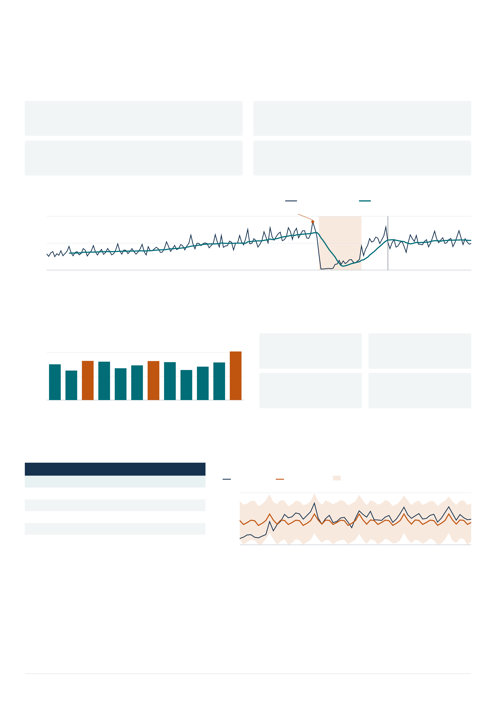

GUATEMALA / INGRESOS DE VISITANTES
2009 A JUNIO DE 2026
El turismo en Guatemala
se mueve por temporadas y depende de sus vecinos
17 años y medio de datos para planificar temporadas, mercados y capacidad.
Turista + Excursionista | 210 meses | Ingresos registrados o estimados, no personas únicas
46,71 M
ingresos acumulados
Ene 2009 a jun 2026
-74,4 %
caída del volumen en 2020
Frente al año 2019
59,1 %
ingresó por vía terrestre
Del acumulado comparable
71,3 %
provino de Centroamérica
Del acumulado comparable
01
La pandemia interrumpió una trayectoria de crecimiento
Evolución mensual del total comparable
Observado
Media móvil de 12 meses
Miles
0
250
500
2009
2013
2017
2020
2023
2026
2023: cambio de registro
Dic 2019: 449 mil
2020: colapso pandémico
2022: recuperación del volumen
2026: solo enero a junio
La suma comparable mejora la continuidad; el cambio metodológico de 2023 aún limita la comparación de niveles.
02
El calendario y el punto de entrada cambian la planificación
Diciembre concentra el mayor promedio mensual
Extremos entre las siete series analizadas
0
150
300
Miles
Ene
Feb
Mar
247
Abr
May
Jun
Jul
246
Ago
Sep
Oct
Nov
Dic
306
Promedio 2009-2019. Marzo/abril: Semana Santa;
julio: bono 14; diciembre: fin de año. Contexto, no causalidad.
Mayor estacionalidad
La Aurora
Fuerza STL 0,547
Mayor crecimiento*
San Cristóbal
13,31 % anualizado
Mayor volatilidad
El Salvador
1,142 en cambios logarítmicos
Mayor caída en 2020
Valle Nuevo
-80,7 % frente a 2019
*Tendencia anterior a 2020. STL: escala de 0 a 1.
Volatilidad: desviación de cambios mensuales de log(1+x).
03
Prophet reduce el error del total en 68,5 % frente a la referencia
Misma serie y mismos 63 meses de prueba para todos los modelos. Menor error es mejor.
Modelo
MAE
RMSE
Prophet
58 033
69 294
Red neuronal MLP
92 801
106 664
SARIMA
99 204
111 215
Suavizamiento simple
129 464
140 630
Holt-Winters
164 531
178 441
Seasonal naïve (referencia)
207 322
219 664
MAE y RMSE en ingresos por mes.
Estimación de Prophet sobre el período de prueba
Observado
Estimación
Intervalo nominal 95 %
0
250
500
Miles
Abr 2021
2023
2025
Jun 2026
Entrenamiento: ene 2009 a mar 2021. Prueba: abr 2021 a jun 2026. Evaluación retrospectiva, no proyección más allá de la base.
Prophet gana 5 de 7 series y SARIMA 2. El desempeño de este corte no garantiza el futuro ni anticipa todos los choques.
04
Cinco decisiones para INGUAT
Anticipar temporadas
Reforzar atención y transporte antes de diciembre; revisar marzo y julio.
Coordinar la capacidad terrestre
Priorizar coordinación en pasos terrestres: concentran 59,1 % del acumulado.
Preparar escenarios ante choques
Acordar ajustes de capacidad y promoción frente a caídas como la de 2020.
Vigilar y diversificar mercados
Monitorear Centroamérica (71,3 %) y evaluar la respuesta de otros mercados.
Actualizar modelos y catálogos
Reevaluar por serie y documentar el cambio de registro de 2023.
2026 parcial y cambios de metodología deben acompañar cualquier lectura de
crecimiento.
Fuente: Base de Migración 2009 a jun 2026, INGUAT/IGM. Uso exclusivamente académico; no son cifras oficiales.
Elaboración con resultados del Laboratorio 1. Guatemala deja de reportarse como país desde 2023; no se interpreta como cero.
Créditos: Equipo del Laboratorio 1